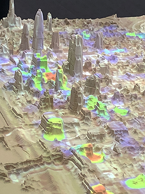
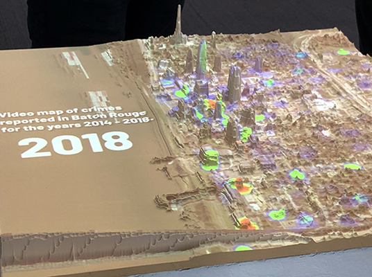

2018 August, Data Visualization
Article: http://design.lsu.edu/lsu-researchers-collaborate-for-smart-city-project/
 
Funding: SCC-Planning: Promoting Smart Technologies in Public Safety and Transportation to Improve Social and Economic Outcomes in a US EDA-Designated Critical Manufacturing Region
PI: Seung-Jong Park
Collaborators: Hye Yeon Nam, Derick Ostrenko, and Brendan Harmon
Community Outreach
2018 August, Water Campus, Baton Rouge, LA